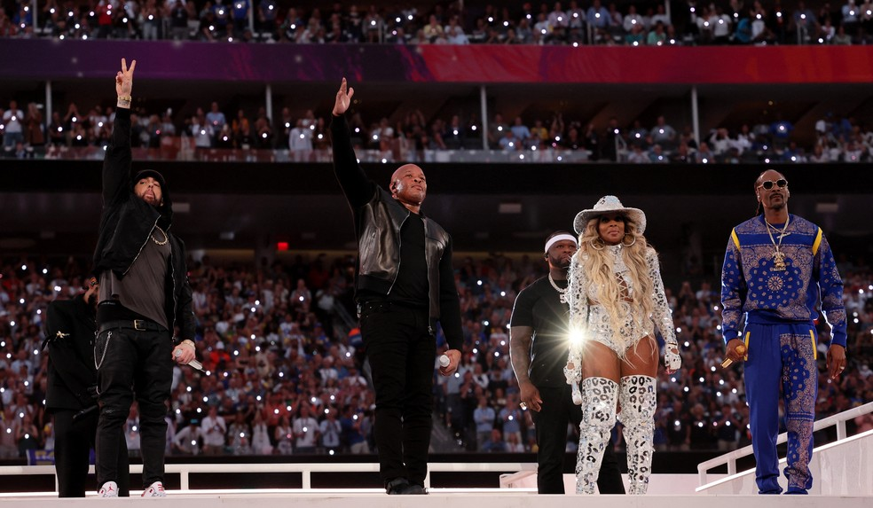
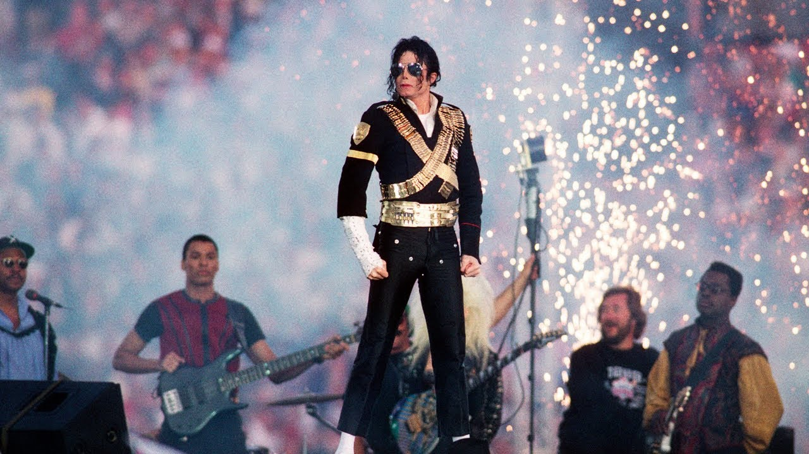
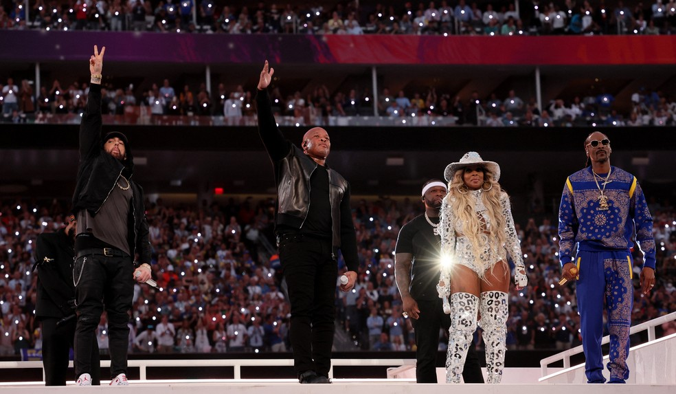
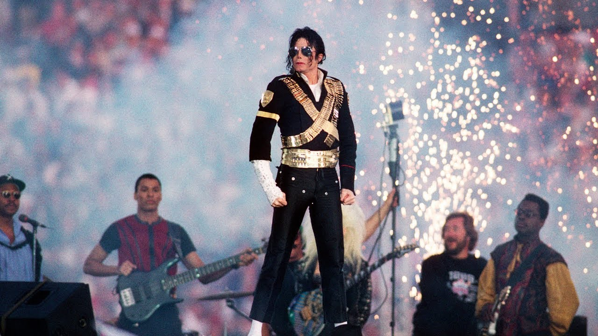

O Futebol Americano nos Estados Unidos


O futebol americano é muito mais do que um esporte nos Estados Unidos: é parte da identidade cultural do país. A cada temporada, milhões de torcedores se reúnem em estádios ou em frente à televisão para acompanhar os jogos da NFL, considerada a liga mais importante e prestigiada do mundo.
O auge do campeonato é o Super Bowl, um dos eventos esportivos mais assistidos do planeta, que vai além das quatro linhas e se transforma em um verdadeiro espetáculo de entretenimento, com shows, comerciais icônicos e uma audiência global.
Apesar da fama internacional da NFL, o futebol americano também é muito forte no universitário, atraindo multidões e formando atletas que, no futuro, se tornam estrelas profissionais. A rivalidade entre times de universidades é uma tradição que atravessa gerações e movimenta cidades inteiras.
Hoje, o futebol americano não é apenas paixão dos americanos: o esporte vem conquistando cada vez mais fãs ao redor do mundo, inclusive no Brasil, onde o número de ligas e torcedores cresce a cada ano.
Super Bowl
 



O Super Bowl é a grande final da NFL (National Football League), o evento esportivo mais aguardado dos Estados Unidos e um dos mais assistidos em todo o mundo. Mais do que uma partida de futebol americano, o Super Bowl se tornou um verdadeiro espetáculo cultural, reunindo esporte, música e entretenimento em uma celebração única.
Um dos momentos mais marcantes do evento é o show do intervalo, que atrai milhões de espectadores ao redor do planeta. Durante cerca de 15 minutos, alguns dos maiores artistas do cenário musical mundial sobem ao palco para uma apresentação grandiosa, com produções tecnológicas de ponta, coreografias elaboradas e efeitos visuais impressionantes.
Participar do show do intervalo do Super Bowl é considerado um dos maiores reconhecimentos da indústria da música. Mesmo que os artistas não recebam cachê, a visibilidade é imensa: em poucos minutos, eles se apresentam para uma audiência que ultrapassa 100 milhões de pessoas. Isso gera um impacto direto em suas carreiras, com aumento expressivo nas vendas de músicas, streaming e fortalecimento de suas marcas pessoais.
Por isso, o Super Bowl vai além do futebol americano: é um espetáculo global que une esporte e cultura pop, e o show do intervalo se consolidou como um dos palcos mais prestigiados do mundo da música.